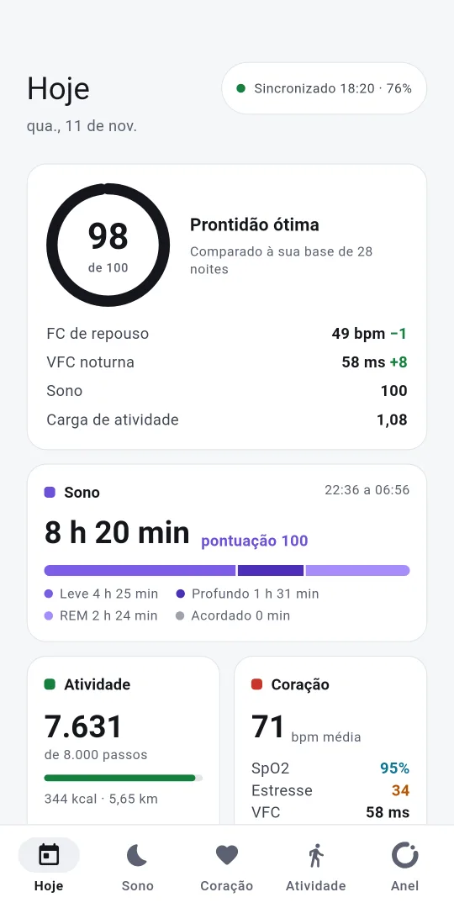
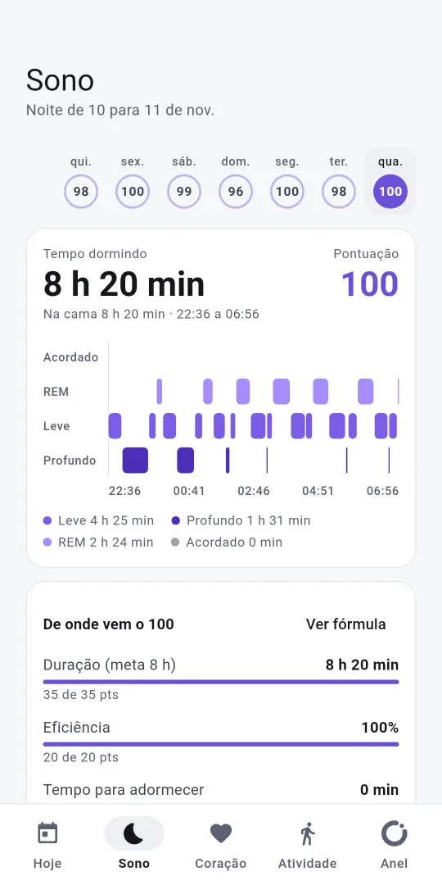
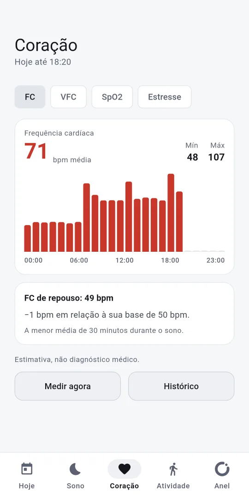
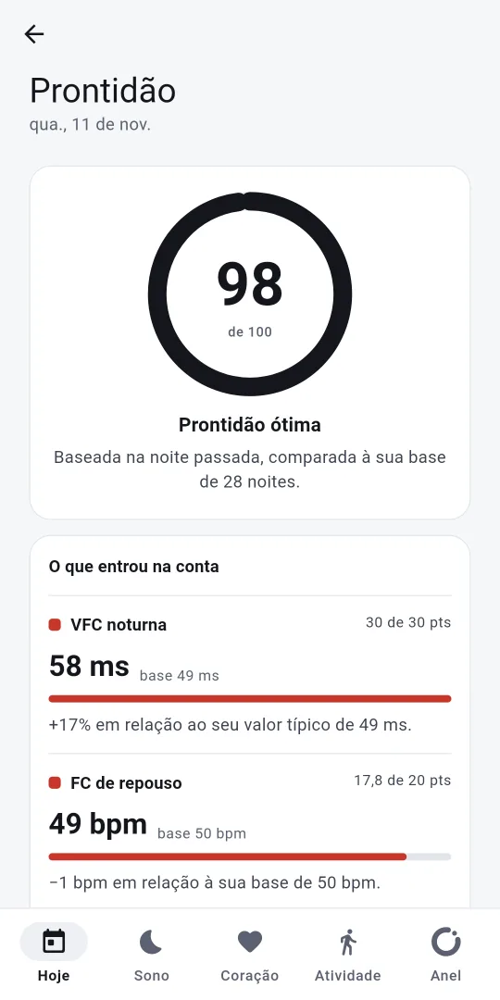
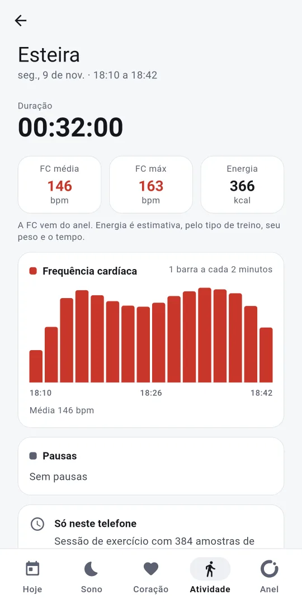

Seu anel inteligente, seus dados, sem nuvem
O OpenRing é um app gratuito e de código aberto para o anel inteligente COLMI R09. Ele mantém o anel sincronizado sozinho, mostra sono, coração e atividade em telas calmas e fáceis de ler, e guarda seus dados no seu celular.
- Sono
- Coração
- Atividade
- Oxigênio
Android 9 ou mais recente. Ainda não há versão para iOS.

Sem conta, sem nuvem
Sem cadastro
Sem login, sem e-mail. Você pareia o anel e já usa.
No seu celular
Seus dados ficam num banco local no celular, não num servidor.
Sem rastreamento
Sem análise de uso, sem anúncios. A internet só é usada para baixar atualizações do próprio app.
Você escolhe o que sai
Envie para o Health Connect, ou exporte um arquivo CSV, JSON ou GPX. Nada mais sai do celular.
O que você vê
Sono
Uma linha do tempo com leve, profundo, REM e acordado, e uma nota que mostra como foi calculada.
Coração
Frequência cardíaca ao longo do dia, FC de repouso, VFC, oxigênio no sangue (SpO2) e estresse.
Prontidão
Uma nota que mostra as entradas: quanto cada uma somou ou tirou, comparada à sua própria base.
Treinos com GPS
FC ao vivo pelo anel; rota, distância, ritmo e parciais pelo celular. Exporte qualquer rota em GPX.
Health Connect
Passos, energia, FC, SpO2, VFC, sono e treinos podem ir para o Health Connect, para os apps que você escolher.
Sincroniza, não transmite
O anel guarda o próprio histórico. O celular conecta a cada 60 minutos por padrão, puxa o que é novo e desconecta.




Anéis suportados
- COLMI R09: testado. Toda verificação do protocolo é feita nele.
- COLMI R02, R03, R06 e R10: podem funcionar, ainda não testados.
O anel conversa com um app por vez, então desconecte-o do app original antes de parear no OpenRing.
Estimativa, não diagnóstico
O OpenRing não é um dispositivo médico. Cada número é uma estimativa feita por um anel de consumo e serve para acompanhar tendências. Ele não diagnostica, não trata e não previne nenhuma condição. Se algo parecer errado com sua saúde, procure um profissional.